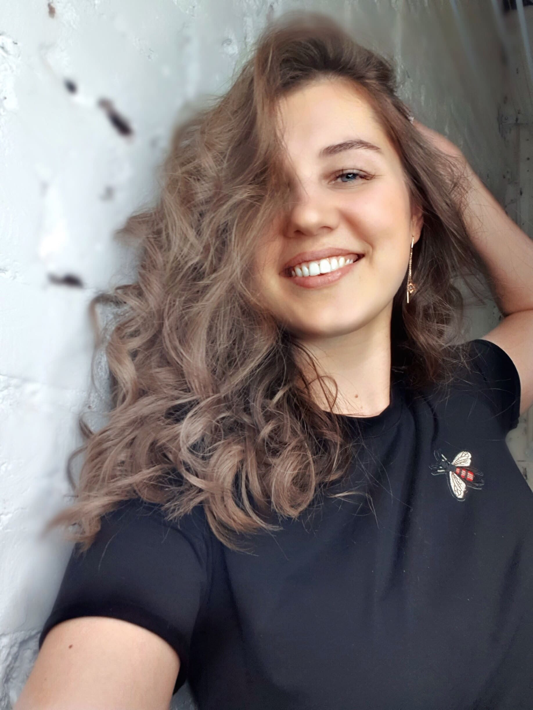

Добро пожаловать!
Меня зовут Марина Сорокина

Обо мне
Закончив школу в 2009 году передо мной встал выбор, куда же мне пойти учиться? Так как на тот момент я не знала чего же хочу, я решила пойти учиться вслед за своей сестрой в экономический колледж, после колледжа, даже во время обучения там, мне было понятно одно - я не буду экономистом. Закончив колледж, на 3 года я сделала перерыв в обучении и работала в страховой компании. И тут поняв что этого мало, в 2015 я поступила в университет, уже параллельно работая в барбершопе в качестве администратора. Я закончила университет в 2019 году по направлению лингвистика, это был прекрасный опыт, на данный момент я владею двумя языками - испанским и английским.
Мои хобби
Моей страстью всегда были и остаются: танцы, книги, иностранные языки ну и конечно как бы не показалось это банальным - путешествия.
Мои ключевые навыки
- Умение работать в многозадачном режиме;
- Работа с большим объемом информации;
- Умение вести различные переговоры;
- Стрессоустойчивость.
Мой путь к разработке
На данный момент я не могу сказать что я прошла какой-то путь к разработке, я пока что новичок во всем этом, но тем не менее, меня очень сильно привлекла возможность совмещать работу и путешествия, что я приложу все свои силы чтобы улучшить свои навыки.